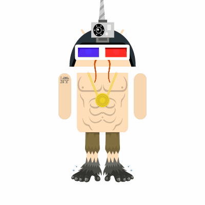

Andy

Grade 11
| Period | Class |
|---|
| 1 | Digital Web Design 2 |
| 2 | English 3P |
| 3 | US History |
| 4 | APCSP |
| 5 | Physics |
6 | Algebra 2 |
Hobbies
- High Jump
- Gaming
- Video Editing
- Biking
Favorite Songs
| Songs |
|---|
| 1. Bohemian Rhapsody |
| 2. Akatsuki |
| 3. Painkiller |
| 4. Breaking the Law |
Hello! My name is Andy Tran and I am currently a student at La Quinta High School. After high school I would like to attend Cal State Fullerston or UCSD to major in computer science. I am also on the boys varsity track and field team at La Quinta. I am in the high jump event and am currently the league champion. I would also like to be competing in NCAA meets in college for the high jump. For fun, I would play video games or watch a lot of YouTube videos. My goals in life are to make it to the Olympics, and to have an enjoyable job so that life wouldn't be boring.
Favorite quote:"I believe I can fly"